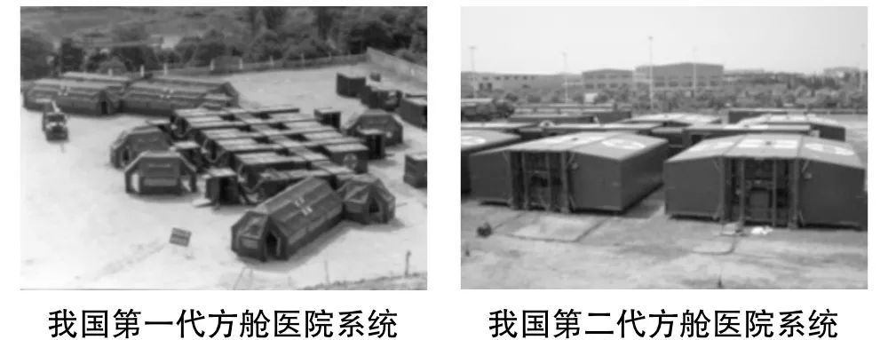
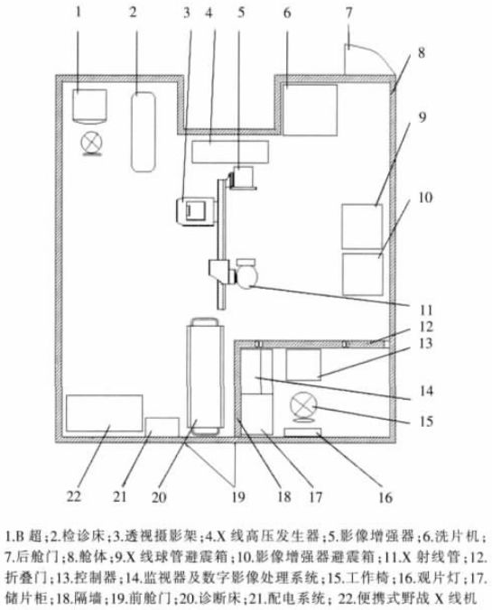
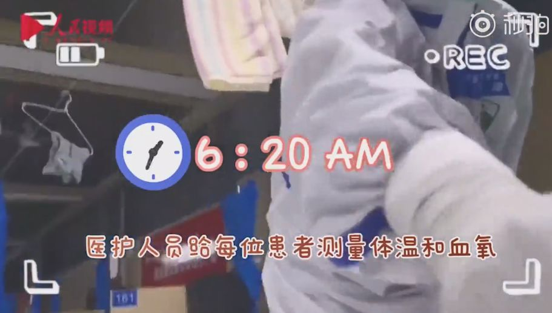
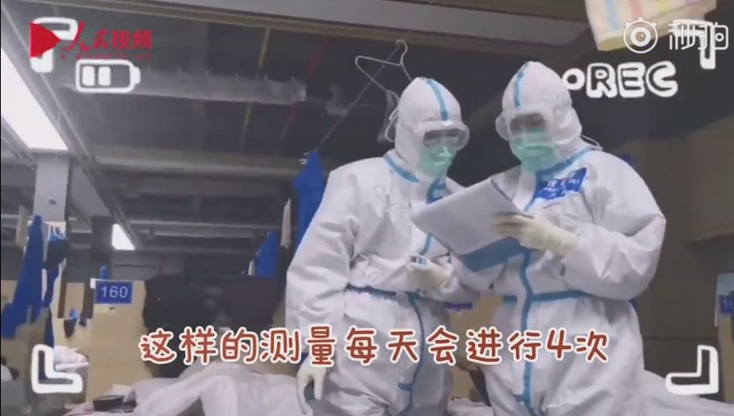
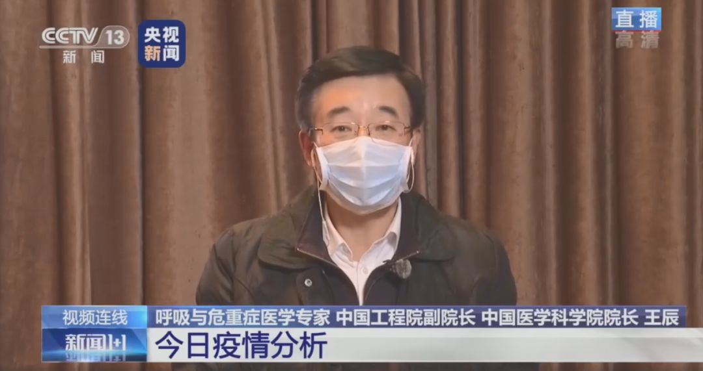

保卫大武汉：决战时刻
原文链接 备份链接 层层战略部署之后，武汉保卫战已经开始。这是一场与病毒和传染源赛跑的立体战役。 要想打赢这场战役，我们需要在时间上，跑在病魔之前，调集重兵，救治患者；在空间上，则要寻遍传染源，斩断传播途径，将其隔离。 《三联生活周刊》 …

跳广场舞、练瑜伽、打太极、复习备考……每天我们都能从社交媒体上了解到武汉“方舱医院”内患者们的日常生活。这些看似平常的活动，却为紧张的抗疫工作带来了一丝活力与鼓舞。
2月3日晚，武汉市宣布将在武汉国际会展中心、洪山体育馆、武汉客厅各建一所“方舱医院”，用来收治新冠肺炎患者。
之后，随着确诊患者的增加，在第一批“方舱医院”投入使用后，大大小小的“方舱医院”又相继开建。据悉，目前武汉已全面启用12家方舱医院，全市方舱医院计划床位已超过2万张。

何为方舱医院？
“方舱”并不是医院的名字，而是一种模块化的野战卫生装备。野战医院大家并不陌生，主要应用于战争时期救治伤员，而“方舱医院”就是由一个个可移动的方舱组成的野战医院。

我们可以把方舱看作一个个乐高积木，有些用来做手术、照X光、灭菌、存放药品和医疗器械等，这些被称作功能方舱。
还有一些用来为功能方舱供电、供水等，保障它们的正常运作，这些就是技术保障方舱。
而将功能方舱与技术保障方舱相连接的就是通道方舱。
再加上用来安置伤病员的帐篷以及用来运输的车辆等，就组成了一所完整的“方舱医院”。
从方舱医院的组成方式，我们就可以看出，与传统的以帐篷为主的野战医院相比，方舱医院要更加灵活、机动，医疗条件也更加完善，更能适应战时需要。
因此，从20世纪60年代美国率先开始研究和应用医用方舱开始，英、德、法等国也相继展开研究。

到了90年代，我军也开始了对医用方舱的研究与应用，虽然起步相对较晚，但发展迅速。
第一代方舱医院系统装备还只是基本具备医院诊治功能，病房单元可展开100张床位，昼夜完成75例手术。发展到第二代展开床位已达150～200张，昼夜通过伤病员可达300～400人，还增加了远程会诊、核生化防护等功能，设备更加先进、组合也更加灵活，大大提高了救治能力。

当然，医用方舱系统的升级换代仍在继续。第三代方舱医院系统的论证设计在信息化水平、技术保障、人员配置等方面都有显著提升。
曾用于地震救援
方舱医院虽然起源于战时，但并不仅仅用于军方作战，也会在抢险救灾等紧急救援行动中使用。在汶川地震、玉树地震救援时，方舱医院就发挥了至关重要的作用。
抢险救灾，时间就是生命。方舱医院机动灵活、便于组装的特点在此时就发挥了优势。
我们以X线方舱为例，它是功能方舱的一种，主要用来诊断患者的病情。
在汶川地震发生后的紧急救援期间，12台方舱以及附属的卫生帐篷从进入场地、展开到连接，再到设备布置、管线安装、最后开始接诊患者，仅用了一个半小时。
当然，组建得再快，医疗功能跟不上也不行。那么，方舱医院的医疗水平如何呢？
所谓麻雀虽小，五脏俱全。别看方舱医院都是临时搭建，但里边的器材非常齐全。
X线方舱布局平面图
▼

组建完备的方舱医院，其医疗水平更是不容忽视。据悉，方舱医院展开后就相当于一所二甲医院。在青海玉树地震发生后的150多天医疗救助中，方舱医院累计接诊3万余名患者，收治2400余人，完成了1400多例手术。
此次疫情中为何启用方舱医院？
对方舱医院有了大致的了解之后，我们再说回此次疫情中武汉建造的几所方舱医院。
据中国工程院副院长、中国医学科学院院长王辰对媒体记者介绍，这种大规模的“方舱医院”不同于战时或抗震救灾时启用的野战移动类医院。以往没有采用过，是我国公共卫生防控与医疗的一个重大举措。
事实上，此次武汉建造的几所“方舱医院”与传统意义上的“方舱医院”略有不同，更多的是运用了方舱医院的内核。
从新闻报道中我们可以看到，目前投入使用或正在建设的方舱医院大多是对已有的体育馆、会展中心等空旷场地较多的公共设施进行改造。
武汉体育中心方舱医院
▼

图片来源：微博@新华视点
大家都知道，传染源的隔离对控制疫情发展至关重要，而方舱医院的改造速度很快，最少只需要24小时就可以完成改建，可以在短时间内达到隔离传染源、救治病患的目的。
另外，不同于传统病房，方舱医院内的病房是开放式的，病患又集中在统一的场地，这更有利于医护人员照看患者、开展工作。
从方舱医院的病人上传到社交网站上的视频来看，医护人员每天要对病人进行多次测量，记录病人的情况和数据，集中收治让医护人员可以快速、高效地完成这些工作。


图片来源：视频截图丨微博@人民网
而空旷的场地也让医护人员可以第一时间发现患者的变化，一旦出现病情恶化的现象，能够及时实施救治，或是送往定点医院治疗。
当然，很多人也会担心，病人的集中收治是否会引起交叉感染。
事实上，方舱医院中收治的都是已经确诊的轻症患者，一般情况下不会出现交叉感染的问题。
当然，王辰在接受媒体记者采访时也表示，方舱医院的条件确实不如正规医院完备，但对轻症患者来说基本足够，主要还是解决扩大收治容量、隔离传染源等问题。

图片来源：视频截图丨微博@央视新闻
他还坦言，在当前状况下，建方舱医院虽非至善之法，但在没有更完善的方法出现的情况下，就是关键时期解决收治矛盾的现实之策。
希望如网友所愿，方舱医院可以早日闭院。
策划：中经补课委员会（ID：cbnews）
文案：喜庆
校对：颜京宁
参考资料：
郭婷婷，武汉将建六家“方舱医院” 为轻症患者提供床位，人民网，2020.02.04
李行健，武汉最大方舱——长江新城方舱医院20日完工交付 3840个床位即将启用，央广网，2020.02.20
王炳南、程正祥，方舱医院发展与研究展望，《医疗卫生装备》2012年01期
林村河、张继明、鲁云敏、燕海军，以医用方舱为依托的机动医院的开设与应用，《西南国防医药》2004年05期
谭树林、刘亚军、孙景工，应急医学救援方舱医院装备研究进展，《医疗卫生装备》2011年09期
王晓辉、易锐、杜忆兵，X线野战方舱在汶川抗震救灾中的应用及建议，《医疗卫生装备》2009年09期
郭新、安军防、黄咏梅，野战方舱医院在玉树抗震救灾中的应用，《解放军医院管理》杂志2011年07期
张旭东、赵文君、方亚东，关键时期的关键之举——中国工程院副院长、呼吸与危重症医学专家王辰回应武汉疫情防控焦点问题，新华网，2020.02.05
微博@央视新闻、@人民网


推荐阅读

点击大图 |OPPO自主造芯，小米10开售1分钟破2亿元……疫情真的能阻止进军中的国产手机吗？

点击大图 |中方紧急捐助核酸检测试剂！日本疫情告急，未来一两周是关键

原文链接 备份链接 层层战略部署之后，武汉保卫战已经开始。这是一场与病毒和传染源赛跑的立体战役。 要想打赢这场战役，我们需要在时间上，跑在病魔之前，调集重兵，救治患者；在空间上，则要寻遍传染源，斩断传播途径，将其隔离。 《三联生活周刊》 …
原文链接 备份链接 *************▲*************2月18日，青山区工人村街道青和居社区第三网格网格员在挨家排查。 （新华社/图） 全文共8426字，阅读大约需要16分钟。 新建或改造医院的速度，远比不上确诊病 …
原文链接 备份链接 基层工作的压力不断加大2月6日，武汉市蔡甸区人民医院的重症病房。摄影/长江日报 陈卓 武汉战“疫”的攻坚时刻 *本刊记者/刘远航 李明子 黄孝光* 发于2020.2.24总第936期《中国新闻周刊》 雷暴与风雪相继到 …
原文链接 备份链接 疫情严峻，武汉仍在不断征集新冠肺炎床位。重压之下，各家医院肿瘤科「只出难进」，有患者被迫出院，通过网络发帖求助；也有患者试图寻求省外求医路，却被两边「入院接收单」与「通行证」夹在中间，难寻答案。 —— 同一个家庭里的新 …
原文链接 备份链接 武汉封城之初遇上医疗挤兑，“居家隔离”政策随之推出。但社区资源和能力未匹配，反而加重家庭内部交叉传染。这是武汉病例此后暴增的主要原因。 纠错政策姗姗来迟，10天后的2月2日，“居家隔离”变为“集中隔离”。但初期隔离 …